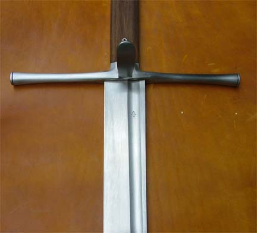
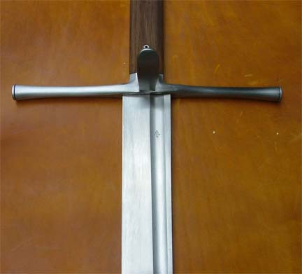

The great combat knife has had a long tradition in Europe. Beginning in the Seax and single-edged Germanic
swords of the Iron Age, a weapon with a big cutting blade mounted as a knife was celebrating a popularity as a
functional and no-nonsense sidearm of warriors and civilians alike through the ages.
In German speaking areas, the Falchion did not reach the same popularity as elsewhere in Eruope. Instead the big
war-knife saw a development of its own.
These come in many forms and sizes, some more intended for stabbing, others for cutting and yet other types that
combined cutting and thrusting capability. We know them today by different names: Rugger (a long, stiff and
pointy variant, primarily meant for stabbing), Hauswher (peasant knife; an intimidating weapon of defence),
Grossemesser /Messer (litterally: big knife/knife, a single handed weapon with a wide cutting blade with the
dimensions os a short sword, popular among commoners, nobles, civilians and soldiers alike) and Kriegsmesser
(war-knife of hand-and-a-half or even two-hand size. A weapon for the professional soldier that also saw use
among civilians).
The Knecht is inspired by the great warknives of the late 15th and early 16th C. These were wielded by
professional soldiers, but saw also popularity among civilian when they needed to carry a more awe-inspiring
sidearm. We often see these weapons in art and fencing manuals from areas of German influence.
It is by first glance a somewhat crude and brutal looking weapon. There is more here than meets the eye,
however.
The blade is certainly brutally efficient in cutting, but the simple design has also a subtlety that is easily
overlooked. The dynamic balance and heft of the weapon arrives almost exclusively from the distribution of mass
in the blade and tang, resutling in a surprising quick handling characteristics.
The cross section is a lean and slim triangle allowing a stiff spine and an acute angle of the main bevel. Such
a blade is very effective in the cut. Along two thirds of the blade there is a narrow but deep fuller that
removes dead weight while allowing a good stiffness from the thick spine. The outer third of the blade is thin
and crisp resulting in a blade that is surprisingly responsive and quick in the recovery.
We can see from presentations in art that the Kreigsmesser was put to use in much the same advanced fighting
techniques as was the longsword. These techniques were in no way crude or simple: the moves described require
quick and expertly balanced weapons of offence and defence.
The hilt of the Knecht is constructed with two grip-slabs that are secured with tubular rivets. The pommel cap
shows a ”fuller” or hollow-grind that continues the length of the grip to the guard. Secured by a rivet through
the guard is a lug on the outside of the hilt that protects the knuckles of the hand. This is an important
feature as the blade is used in binding and winding techniques that otherwise easily might result in damage of
the forward hand.
The hilt components are investment cast in mild steel from original waxes carved by Peter Johnsson, based on
Peter's first-hand examination and documentation of period originals of this type.
The blade is made from a highly defined blade blank hand-ground from high-carbon steel to a fine satin finish,
heat-treated by hand for maximum flexibility and to take a fine edge. These swords are sold sharp, unless
otherwise requested by the customer..
Specifications
Overall length: 44.375" (113 cm)
Blade length: 33.375" (84.77 cm)
Blade width at base: 1.75" (4.45 cm)
CoG: 4.375" (11.1 cm)
CoP: 21.75" (55.25 cm)
Weight: 3 lbs 2.4 oz (1.43 kg)
The highly anticipated new version of the famous Falke Kriegsmesser is now available. Refined, resharpened, even
more breath-taking.
The turning point of the 15th and 16th centuries brought along the largest single-edged weapon with a knifelike
construction, the Kriegsmesser, war knife. Most antique Kriegsmessers are below the 1300mm overall size,
however, some illustrations might show larger pieces as well.
Most of the originals have M5b, M5a, or M3d blades with various degrees of curvature, while some are completely
straight, occasionally with elongated false edges. With the Ruggers and Bauernwehrs being analogous to daggers
and proper Messers to arming swords, it's clear that these huge knives were created to compete with European
longswords (Wittenweller equates them the same way).
This specific model of the war knife from our collection is based on the portrait of Fritz Rürenschlundt by Jörg
Breu the Elder. The new, revised model has even more curvature with a pronounced profile taper. This results in
a more slender look even while in the scabbard, and a much closer depiction of the original artwork.
Additionally, we have flattened the cross-section in model 2.0 which lowers both the overall weight of the piece
(allowing for comfortable one-handed use), as well as the resistance during passing through a cutting medium.
The blade is ground completely by hand from 6mm thick 6150 steel (51crv4 by European standard) to an almost
completely flat triangle cross-section and is sharp on its entire length, it lacks, however, a false edge. After
the grinding, it’s sanded by hand to achieve a clean sheen. The edge has been hand-honed.
The grip length allows two-handed use, although as mentioned, this Kriegsmesser is light enough to be used in
just one hand, which is another feature that makes it stand out. We could argue that it's even closer in
handling to sabers than to the larger Kriegsmessers.
We have designed the grip construction with a hidden and pinned tang, in a similar fashion to several Eastern
European sabers from the late 16th century, with plenty of originals filling the gaps between the two weapon
types.
We have decided to slim down the grip in comparison to the previous model, allowing for a more comfortable grip.
Additionally, the whole hardwood surface is covered with black leather, which has been burnished before sealing
shut on the side to increase the comfort while still allowing for a bit of extra traction. The butt of the grip
has been covered with a separate thin piece of leather with skived edges to eliminate the seam.
The cross and Nagel are both hand-ground. The former has delicate yet crisp filework at the ends of the arms,
while the wide N5d Nagel is heavily fullered and scalloped. The cross is slid down along the blade and the Nagel
is peened on the other side.
Please be advised; slight variations and differences may occur in the products due to their hand-made nature and
the organic materials used.
The products aim to have the aesthetics of historical pieces, not the finish of mass-produced items. Each
product bears the signs of its making; small tool marks and imperfections, which do not affect the build quality
or usability but give each of our pieces its unique character.
The weapon is a practice sharp Kriegsmesser for cutting and technical drills, perfect for Historical European
Martial Arts (HEMA).
Weapon type Messer
Quillion length 315 mm
Blade length 780 mm
Overall length 1 033 mm
Point of balance 95 mm
Weight 1 125 grams
Blade width at the base 44 mm
Starting thickness 6 mm
Stock Out of stock
Article No. LE-M5A-2-1
This weapon is made by of one of the best swordsmiths in Czechia - Mr. Pavel Moc. His bladed weapons are generally an "artistic license" of historical originals. They are the result of decades-long-experience and discussions with historians, swordsmen and colleagues in the industry. If the replica does not directly correspond to the preserved original, it is based on contemporary iconography, illuminations and its final form is a "well informed stylization".
The blade is made of spring steel for dynamic strain CSN 14260 (DIN 54SiCr6, GOST 60S2CHA) or CSN 15260 (50CrV4 DIN 1.8159). The steel is heated to 820-860° C and then immersed into oil. The steel is then tempered at 540-680° C according to the prescribed technical standards in computer-controlled-ovens. The first kind of steel has a slightly higher elasticity, the second one can be slightly more hardened. Both types of steel are oil-quenched and tempered to a hardness of 48.5 +/- 2 HRc.
This weapon is designed for experienced fencers who prefer light swords with flexible blades and who use rather their head than force in sword combats. The anti-break-warranty for the blade refers only to material defects. The warranty does not cover natural wear of the blade and the grip. The guard is riveted (not soldered) to the blade. It may happen that the rivet connection gets loosened after some time and the sword begins to rattle during combat. This is a sign of wear that does not affect the function of the sword, does not diminish its quality or worsen the safety of the swordsman.
Página del fabricante --no había video de este ultimo así que he cogido el anterior de nuevo--.jpg)
.jpg)
.jpg)